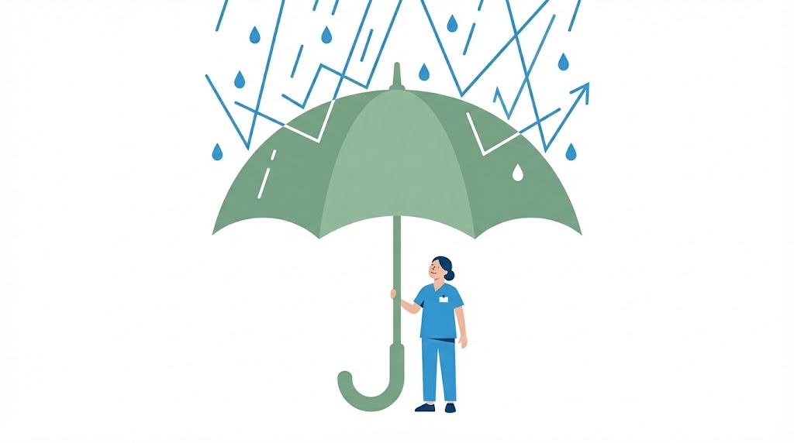

相關資源與連結 (Resources)
你的專業後盾
你不必獨自面對所有困難，這裡有願意傾聽與協助的管道。
❤️ 心理支持與諮詢
當情緒快要潰堤，或只是想找人說說話時，這些資源隨時為你敞開。
-
員工協助方案 (EAP)
許多醫院皆有簽約的心理諮商服務，具有絕對保密性。請洽詢您醫院的人力資源室或職安室，這是您的員工權益。
-
衛福部安心專線
撥打：1925 (依舊愛我)
24小時免費心理諮詢服務，由專業人員提供即時的情緒支持。
🛡️ 職場權益申訴與法律支援
當遇到不合理的排班、違法工時或勞資爭議時，請善用官方通報與法律途徑保護自己。